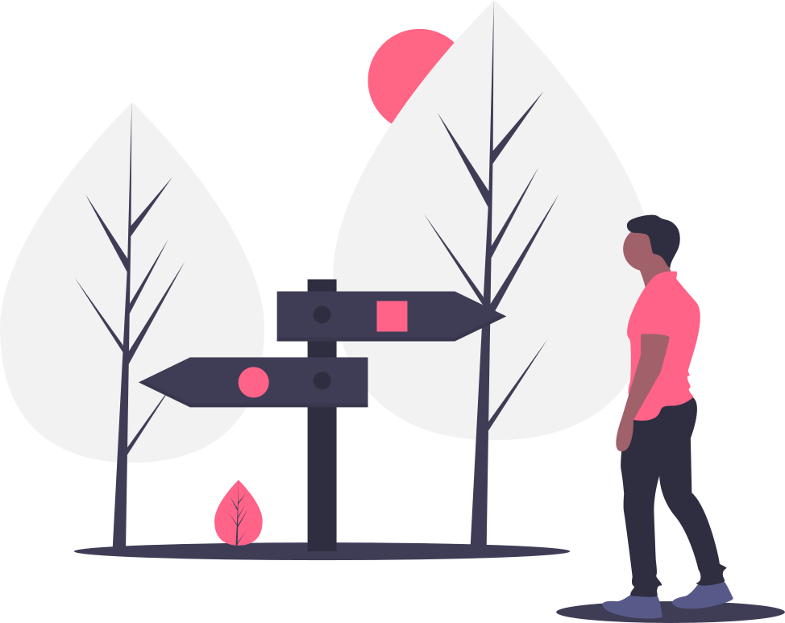

First Blog and About
Web Design And Development
Contact ↯


Please allow me to introduce myself I am a man of... It does not exactly go as in the song, but I am a man of taste. As it happens I was born in a small town of Breza. It is a mining town so there isn't a lot to do. I was a lively child... untill my mother got me my first PC. I fell in love with technology then, but lets not kid ourselves it was mostly because of games. But actually my love of technology goes further back when I got my first gaming console. It was a knock-off Nintendo Famicom, and called Terminator. It almost never worked without problems and had an adapter that could last for a whole two hours before frying itself. The Chinese were not known for their quality products then...
Now that we now the reason for this technological obsession let's continue. After breaking about a hundred controllers playing Mario Bros, and countless other popular titles which I can't even remember now, in a few years the age of the Terminator was over. Couple of my friends including me started getting their first PC's. They were mostly IBM's with pentium 3 processors (the lucky ones had pentium 4's) and big bulky CRT monitors. My main concern once I got my hands on one, despite all the educational possibilities, was how to get some games to run. Most of the PC's then ran Windows 98, and let me tell you it was a real challenge getting that first game to run. But oh what a game it was.
I don't remember games having mature rating then. But Doom would definitely have an 18+ rating. Not that it mattered to us or bothered us. We turned out great didn't we?
For a better part of my life I did not really know what I
want to do. With life in general. But I guess that's normal, and you could probably say that for every
adolescent. Especially adolescents of that time, our time... After all we were the 90s kids.
As I am now reflecting on this period there comes to mind a lot of mixed memories and feelings. The joys
of youth are plenty but so are the sorrows. Into this house we're born in to this world
we're thrown.

Another factor that contributed to that confusion is war. The country had gone through a rough period of internal conflict and it got ugly fast. Now you can imagine (or perhaps you can't) that post war period and all the merits it brought. Let's just say that kids were not the only ones who were confused. I've always had alot of passion in doing anything that I love ever since I was a kid.
I was probably the most stubborn child of all the kids. When I got a hold of something, an idea, I just would not let go. I would go to the apsolute extremes with it. I can't stress enough that this is not a good thing, no matter what anyone says. Having passion for something is great it is what pushes you forward, but if you are not able to control it and slow down, you will burn out fast.
School wasn't really my thing. Even in kindergarten I struggled with following sleeping rules and such. I belive the mind wants to be free always. My child self could not understand why we must follow all these rules. I just wanted to be free to do what I want. If I dind't like something I would leave it. I was like this always, even those early days. So what did I do? I left. And I left every day no matter how hard they tried to stop me. Whenever I felt like I had enough of kindergarten and all the other kids there was no door that could stop me.

That was the first time I learned something about myself. Besides being different, I was incredibly resourcefull. Those kindergarten teachers really had a hard time keeping me in.
I don't remember having friends that early in life. What I remember is that I could not rely on anyone, especially in my escapes. Kids are the ultimate competition to each other. Every time I would confess any detail of my plan to any of the other kids they would always rat me out to the teacher, and I would find myself having to resort to some other clever way of deception. You would think that this kind of early exposure to society would work to your benefit and help you later in life. It might, but that wasn't the case for me, because everything I do I do the hard way and multiple times. Every period of our lives has a distinct feel to it. It is almost as if we are different people at different times.
When I hit school it was another ball game entirely. When I say hit I mean it. For me it was like the end of the world. School was a lot more serious and everyone tried really hard to pound it into my head. No more childish behaviour, no clever escapes, and you have to put a lot of time in it. The time part I didn't really understand, because what was time to a child? I had loads of it and always only wanted the sun to set a little slower. That first day in school I learnd that one day can last a lifetime. That first day was longer than all of my years combined up to that point.